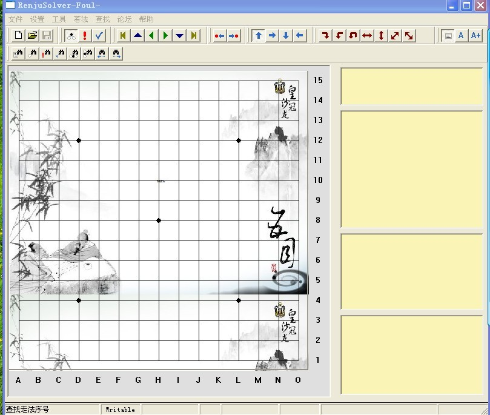
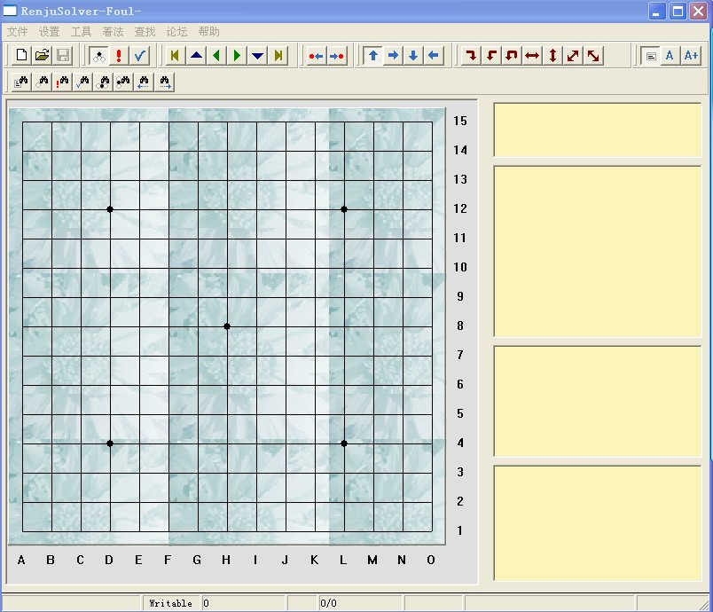

美化了一下爱无棋子棋打谱软件,希望有人喜欢
#1 美化了一下爱无棋子棋打谱软件,希望有人喜欢 作者：足球赛 发表时间：2010-8-1 22:28:26
在爱五子棋网学到了不少东西,一直想谢谢大家,可是因为水平低,无法在棋局上作出贡献,于是一直想着用其他办法来回馈大家,一日用打谱软件,哎,这是个好法子,大家天天用,我是否可以把它美化一下? 于是我就开始捣鼓爱五子棋打谱软件,我试着用各种不同的颜色,去调棋盘的颜色,去调背景的颜色,调来挑去皆不满盈,因为有时调得色彩过于鲜艳,确实漂亮的了些,觉得它会影响人的注意力,毕竟它是用作打谱来做的.包括考虑过沿用renlib的棋盘和棋子,renlib的棋盘和棋子颜色都还不错.可是我依然觉得它的美观影响了人们打谱时,特别对于高手打谱时的注意力,另外好像也没有了我们爱五子棋打谱软件的特色. 棋子上,我在网上搜寻了很多棋子图片,也被我一一否决了,觉得还是原有的爱五子棋打谱软件的好.
终于今天我无意浏览一个网站时,发觉了一张图,这个图觉得不错,就是它了,把它拿来用作棋盘的背景图,一安装上去觉得确实不错,既有美化的作用,又不影响打谱的实质,,接下来我就开始着手调背景的颜色,重点开始考虑的黄色和蓝色系,调到最后都不满意,最后调到现在的颜色,烟灰色,接下来就是调编辑框底色,考虑到棋盘其他界面的素养和沉静,觉得给它证件一点色彩,于是采用了黄色系,给整个软件增加一点亮色,在原有的爱五子棋软件的黄色上,我进行了一些调整,于是现成了现在的 软件界面
请大家看附件 直接打开就好 .然后解压缩到桌面,先看截图,在打开软件,如果想把压缩包内的图片盘面移到其他文件夹,需要更改一下设置 点软件设置---盘面显示--背景图片-- "第一个" 使用bmp背景图片,改一下就可以(点那个未命名的)
希望大家喜欢
在这里认识到了,很多人,光从名字上看,象黄药师,屏蔽老师,五子痴老师,茗奕小刀,我觉得他们都会喜欢的
#2 Re:美化了一下爱无棋子棋打谱软件,希望有人喜欢 作者：一剑寒霜 发表时间：2010-8-2 10:59:26
没有看到附件啊#3 Re:美化了一下爱无棋子棋打谱软件,希望有人喜欢 作者：足球赛 发表时间：2010-8-2 19:56:21
综合以上情况,只给出两个图,喜欢第一个图的 按照压缩软件内的说明选择五子图片,喜欢第二个图的选择清爽图片
效果图 1

效果图2

 美化了一下爱五子棋软件.rar
美化了一下爱五子棋软件.rar注释框的底色,因为软件自身所带色彩的限制,无法调到我满意的状态
喜欢的说一下,你的开心,我快乐
希望这两张图 成为原爱五子棋软件2.1版提供下载时,随带的附图
［此帖子已被 足球赛 在 2010-8-2 20:38:24 编辑过］
［ 屏蔽 于 2010-8-2 21:31:32 时花20金币送鲜花一朵］
#4 Re:美化了一下爱无棋子棋打谱软件,希望有人喜欢 作者：小帮帮 发表时间：2010-8-3 2:08:26
个人偏好吧，也许真的有人会喜欢